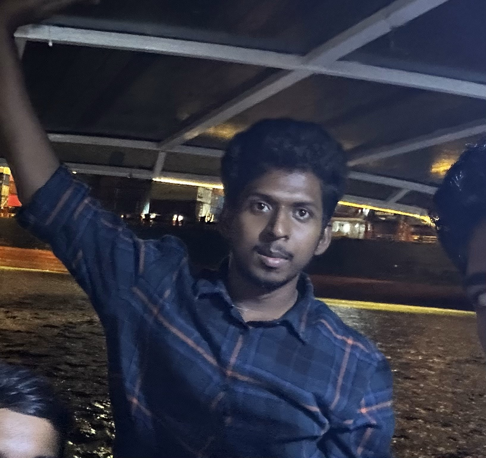

|
Purushothaman Natarajan
I am a Junior Research Fellow at SRM University, Chennai, India. Advised by Dr. Athira Nambiar, and my research interests lie in computer vision and natural language processing
(NLP), specifically generative models and explainable AI (XAI), they also extend to self-supervised learning and few-shot learning.
Email /
LinkedIn /
Resume /
GitHub
|
 |
Submitted Publications
Underwater SONAR Image Classification and Analysis using LIME-based Explainable AI
Dec - 2023
Purushothaman Natarajan, Athira Nambiar
IEEE Journal of Oceanic Engineering
[Paper]
[Code]
This research explores the application of Explainable Artificial Intelligence (XAI) to enhance interpretability in underwater image
classification, marking a pioneering effort in the field. Utilizing custom datasets including Seabed Objects KLSG, camera SONAR, mine SONAR
images, and SCTD, extensive analysis of transfer learning techniques is conducted across prominent Convolutional Neural Network (CNN)
architectures. The research integrates Local Interpretable Model-Agnostic Explanations (LIME) and Submodular Picks LIME (SP-LIME),
leveraging algorithms like Quickshift and Simple Linear Iterative Clustering (SLIC) for image perturbation. These XAI techniques provide
transparent justifications for model decisions, essential for deploying AI systems in high-security domains with confidence and reliability.
VALE: A Multimodal Visual and Language Explanation Framework for Image Classifiers using eXplainable AI and Language Models
June - 2024
Purushothaman Natarajan, Athira Nambiar
CVIP - 2024
[Paper]
[Code]
A novel multimodal Explainable AI (XAI) framework known as VALE. VALE integrates image classification
with SHAP for visual explanations and utilizes the Segment Anything Model (SAM) for precise object segmentation. It enhances interpretability
by employing Vision Language Models (VLMs) to generate clear textual explanations from visual inputs, addressing the semantic gap between modalities.
Demonstrated on tasks like ImageNet classification and specialized applications such as underwater SONAR image analysis, LAVE underscores its adaptability
and performance through prompt engineering and transfer learning for real-world applications such as defense.
|
Education
PhD in Computer Science, SRM University (Feb 2024 - Sept 2027) - Planned to Drop-out
Coursework: Computer Architecture, Artificial Intelligence, Comparison of Learning Algorithms, Computational Theory
M.Tech in Data Science, BITS Pilani (Sept 2022 - Sept 2024)
CGPA: 8.3/10
Coursework: Data Science, Applied Machine Learning, Deep Learning, Natural Language Processing, Information Retrieval, Artificial
and Computational Intelligence
B.E in Mechanical Engineering, Anna University (Aug 2015 - Nov 2020)
CGPA: 6.5/10
Coursework: Design Thinking, Engineering Mechanics, Thermodynamics, Fluid Mechanics, Manufacturing Engineering
|
Experience
Research Fellow (Machine Learning & eXplainable AI), SRMIST, Chennai, IN (Sept 2023 - Present)
- Developing algorithms for underwater sonar image detection, enhancing surveillance capabilities.
- Integrated Explainable AI for transparency and trust in defense applications.
- Delivered self-explainable AI models tested by NPOL, DRDO, and the Defense Ministry of India.
Machine Learning Associate, Amazon, Chennai, IN (Aug 2022 - May 2023)
- Handled data quality for Alexa, Ring, and Halo products.
- Utilized NLTK and SpaCy for text preprocessing and Pandas and NumPy for data cleaning and preprocessing.
- Designed performance dashboards for data-driven decision-making.
Customer Support Executive, Amazon, Coimbatore, IN (Aug 2021 - Nov 2021)
- Developed data cleaning and preprocessing pipelines using Python libraries.
- Designed real-time prediction dashboards with Tableau, monitoring system health and performance metrics.
|
Skills
|
Languages: Python, JavaScript, TypeScript, SQL
Technologies & Tools: PyTorch, TensorFlow, OpenCV, Git, NLTK, Matplotlib, Tableau, Spark, Kubernetes, Docker
Cloud Platforms: GCP, AWS
|
Projects
Q&A Chatbot from PDF [GitHub Link]
- Chatbot for answering queries from PDFs using BERT.
- Tools: Python, Transformers, NLTK, Gradio, TensorFlow.
XAI for AID Scene Classification on Remote Sensing [GitHub Link]
- Scene classification with transfer learning and prediction explanations using LIME and Grad-CAM.
- Tools: Python, TensorFlow, Scikit-learn, LIME, Grad-CAM, Gradio.
Piezoelectric Generator
- Transducer to collect energy from mechanical vibrations to power microdevices.
- Tools: SolidWorks, CAD.
|
Additional Experience and Awards
Instructor, BrightNext Academy (2024-Present)
- Taught Machine Learning and Deep Learning courses.
Freelancer (Upwork and LinkedIn) (2022-2024)
- Delivered AI and ML projects valued between $10K to $20K.
Third Prize, Innovation & Design on Remote Sensing Data
- Recognized for designing a dashboard for an explainable image classifier.
|
|